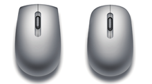
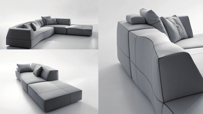

产品语意设计 Product Semantic Design
Table of Contents
1 产品语意概述
- 产品语意 < 产品语言 < 产品符号
- 产品语意层次 (外延 | 内涵)
- 产品语意价值
1.1 产品语意
- 语意(Semantic)是语言的意义
- 产品语意是产品语言所表达的含义
1.1.1 产品语意学
- 语意学(Semantics)是研究语言意义的学科。
- 产品语意学是研究人造物形态在使用情境中的象征特性，并将此运用于设计。
1.1.2 广义产品语意学
- 产品语意反映心理、社会及文化连贯性，产品从而成为人与象征环境的连接者，架起一个象征环境。
- 产品语意学是对旧有事实的新觉醒；
- 产品不仅具备物理机能，且能够：
- (1)指示如何使用；
- (2)具有象征功能；
- (3)构成人们生活其中的象征环境。
1.1.3 产品语意示例
- 指示 / 隐喻 / 象征 / 联想

1.2 产品语言
- 产品语意是产品语言（语构、语意、语用）的一部分。
- 产品语言着力于人和物的交流；
- 形/构/材/色/质揭示或暗示内部结构，功能明确，界面易理解，解除操作困惑；
- 形态设计明确视觉形象和象征意义，传达文化内涵，产生富有情趣的生活方式；
- 达到人、机、环境的和谐统一。
1.2.1 产品语言表达
产品表达即语言， 对产品语言的理解因人而异 (一个编码或对应数个解码)。
1.2.1.1 直白表达
- 直白表达建立在人们对标识语意达成共识的基础上。
- 例：洗手间标示男厕所、女厕所
1.2.1.2 隐含表达
- 感觉是人的体验，据思维习惯展开联想。
- 同一产品，不同人或有不同理解与情感体验。
- 例：香水瓶从形态、色彩、质感，甚至摆放环境读出“端庄”“优雅”。
1.2.2 产品语言组成
- 构成：造型语言 / 互动语言
- 要素：形态 / 色彩 / 材质 / 声音 / 动作
- 系统：系统性 / 主导性
1.2.2.1 有声语言构成
通过语音传达信息，使听者接收该信息后产生一定理解。
- 字、词、句、语法与音调、音量等共同构成语言内容和表达方式
- 相同话语由于语调变化产生意思或情感差异 (温柔/犀利)。
1.2.2.2 有声语言 -> 产品语言
- 通过有声语言语意理解过渡到产品语意理解降低产品语意学习难度。
- 产品语意设计目的是对产品进行表达与信息传播。
- 电影和摄影语言有各自独特的语意表达方式，
- 选择特定领域表达方式，将其原理转化到产品设计中。
1.2.2.3 产品语言构成
- 说话内容: 产品类型 (操作类 / 家具类 / 欣赏类等)
- 表达方式: 类似语调、语气呈现情感，脸面呈现表情和气质。
- 造型语言 / 互动语言
1.2.2.3.1 产品造型语言
通过形态、色彩和材质表达产品造型
- 线条交织、虚实呼应体现豪华感与现代感，激发情感体验。
- 人对速度的感性认识与游艇流动性的形态产生共鸣。
- 共鸣本质上是人对事物的理解或期盼正好和某事物的出现相吻合。

- 打破传统高直立方或柱状造型，蛋形呈现敦实可爱的情感语意
1.2.2.3.2 产品互动语言
产品通过声音和动作表达互动
- 产品语言据互动方式产生不同语意
- 例：肢体语言互动，抱和拉手呈现语意差异
- 产品语言涉及感官体验多样而综合
- 例：视 / 触 / 听 / 嗅觉体验都能成为人们理解产品语言的一种手段。
- 室内自行运动时，产生生命感，与周围事物和人互动
1.2.2.4 产品语言要素
- 形态
- 色彩
- 材质
- 声音与动作
1.2.2.4.1 形态

- 水晕－－日本庭院枯山水
- 亲近自然、修身养性
- 卢浮宫入口地下倒锥天窗充满张力
1.2.2.4.2 色彩
当产品色彩与人的情绪匹配时，便产生共鸣。
- 用餐设计偏暖色，吃饭更温馨。
- 设备色彩低纯度，局部高亮，适合环境和操作。
- 同款商品多种色彩供选择。
- 一组产品的单个产品色彩或一个产品的局部用色作为视觉焦点，主导氛围。
- 例：自行车局部用色影响自行车气质和场地氛围。
1.2.2.4.3 材质
- 材质包括视觉效果和触觉感受
- 例：手柄磨砂效果与光滑表面给人不同品质感

1.2.2.4.4 声音与动作
- 智能产品通过声音与动作增加人和产品的互动
- 手指划过屏幕的声音，按下开关键发出的音效等。
- 例：通过感应实现开合的垃圾箱，开合速度、幅度等成为语言特征。

1.2.2.5 产品语言系统特征
- 系统性
- 主导性
1.2.2.5.1 系统性
- 局部和整体相联系
- 例：衣、裤、裙、鞋、帽需搭配发挥整体价值。
1.2.2.5.2 主导性
- 主导语言即产品主要性格
- 其他语言根据系统规律依次出场。如说话时主题表达基础上，用其他语言润色。
- 产品通过表情或气质确定“主导语言”，继而通过细节实现产品语意综合表达。
1.2.3 产品语言作用
- 贴合消费心理
- 人文关怀与社会责任
- 传达哲学观念
1.2.3.1 贴合消费心理
- 产品语言与消费心理产生共鸣，即“共同语言”，实现设计价值。
1.2.3.2 人文关怀与社会责任
- 以人为本，考虑个体差异
- 例：公共洗手池高低不同的尺寸满足不同身高与年龄人的需求
1.2.3.3 传达哲学观念
- 产品与环境共同作用形成意会“言传”哲学
- 例：安静淡雅的茶杯
1.3 产品符号
- 符号作为抽象概念，是一种具有表意功能的传达手段或媒介
- 语言是符号的一种类型 (非语言符号有手势、表情等)
- 产品语言以符号形式传达信息，在不同层面和人交流
1.3.1 符号学
- 符号学是有关符号或符号系统的科学
- 研究符号本质、发展规律、意指作用，及符号与人类各种活动的关系等

1.3.1.1 符号系统研究
分三部分：语形学syntactics、语意学semantics和语用学pragmatics
- 语形学：符号之间的形式关系 (符号与符号)
- 语意学：符号和其所表对象之间的关系 (符号与意义)
- 语用学：符号和解释者之间的关系 (符号与人)
1.3.1.2 符号学与产品语意学
- 符号学是一门交叉科学，产品语意学是符号学在产品设计中的应用。
- 产品语意研究设计符号与其象征意义之间的关系。
1.3.2 符号来源
- 人类生存需要，在实践中不断寻找各种观念、情感、信息交流和表达形式。
- 例：原始绘画、文字、音乐等，形成某些有意义的特殊媒介物，即符号。
1.3.2.1 符号与信号
- 符号 (表达和意指)：有间接层面
- 信号 (条件反射)：植物 (向日葵/含羞草)、动物 (蜜蜂)、人 (打喷嚏)
1.3.3 符号组成
- 二元组成
- 三元组成
1.3.3.1 二元组成：能指 | 所指
- 能指 (signifier)：语言符号的“音响形象”(指称物)
- 例：造型、色彩、肌理或构成视觉图形的点、线、面等
- 所指 (signified)：符号所表达的概念和承载的意义 (被指称物)
- 例：冒烟表示着火了
1.3.3.2 三元组成：形体 | 对象 | 解释
- 符号形体 (sign) ：某种对某人来说在某方面或以某种能力代表某一事物的东西
- 符号对象 (object)：符号形体代表的那个“某一事物”
- 符号解释 (interpretant)：使用者对符号形体所传达的关于符号对象的讯息 (意义)
1.3.3.3 二元和三元对应
- 能指 – 符号形体
- 所指 – 符号对象和符号解释
1.3.4 符号传播
符号信息发出和接收，表达意和理解意或有差异。

1.3.4.1 编码与解码
- 设计师编码视觉语言信息 (符号元素组合成视觉系统)；
- 消费者解码信息 (自身理解)；
- 设计语言的有效程度取决于编码和解码的一致程度和创新空间。
1.3.4.2 符号传播过程
信息发出，通过媒介被接收者翻译和理解的过程。
- 信息发出 (发出者/发出方式/发出内容和数量/发出环境)
- 信息传播 (传播环境)
- 信息接收 (接收者特征/接收者对信息的理解)
- 例：你好或再见，语境不同理解不同

1.3.5 设计符号
- 设计符号是设计信息和观念的载体，也是文化表现形式。
- 语意符号表达观念，通过产品外形和人沟通。
1.3.5.1 设计能指和所指
- 能指：用各种手段创造视觉内容，图形、物品与建筑空间包括光效构成的虚空间
- 所指：对这些图形、物品、空间的理解
1.3.5.2 设计符号表达
- 由物质构成手段和使用功能所限，设计符号以象征和隐喻为主，较少具象；
- 可将设计元素和手段看作设计符号；
- 通过对这些元素的加工与整合，实现传情达意。
1.3.5.2.1 现代语意符号表达
- 现代主义建筑和产品采用抽象符号表达对理性美的追求
1.3.5.2.2 传统语意符号表达
- 表达传统文化意境，而不是简单堆砌。
1.3.5.2.3 产品语意变化 (流行)
- 依赖人们的生活方式和社会观念；
- 依赖科技发展。
1.3.6 设计符号的传播
- 设计师想要表达的产品信息和消费者理解到的或存差异。
- 怎样使产品信息易被理解?
1.3.6.1 产品解码差异原因
- 接收者在知识、年龄、地域文化习惯等方面有差异
1.3.6.2 应对解码差异
- 尽可能缩小解码误差 (找共性)；
- 同时留给受众解码空间。
1.3.6.3 影响符号传播 (编码/解码) 因素
- 设计因素
- 受众因素
- 环境因素
- 时间因素
1.3.6.3.1 设计因素 (影响编码)
- 设计是一种促进交流 (人与环境、人与产品、人与人) 的手段。
- 编码是设计者通过设计语言呈现给用户的沟通方式。
- 新产品开发：符号设计建立和人沟通的方式。
- 空气净化器应对空气质量下降；
- 人们之前对空气净化器没有任何印象，给语意设计提供较大空间；
- 但也影响人们对空气净化器的识别和情感诉求。
编码-(解释)->解码
- 若编码和人们记忆中的解读方式吻合，易根据经验理解
- 若编码难理解，需讲解说明，形成印象后成为约定俗成的编码为设计师所用。
- 例：华为手机截屏用指关节敲击完成
1.3.6.3.2 受众因素 (影响解码)
- 差异和共性
- 消费者的解码特征
- 消费者解码环节
- 消费者的解码创新
- 生长环境、现在环境、思维习惯、知识体系 (社会、文化、经历、性格和情感)
- 同一个社交圈、同一类职业
- 设计编码时，需了解消费者解码习惯 (产品语言依赖人们的解读)
- 例：宜家产品简约、实用、不贵的符号特征抓住年轻人的心。
- 调查和模拟消费者购物环境、需求目的心态等，准确定位产品；
- 产品语言适合消费者认知习惯易产生共鸣；但要有新意，消除视觉疲劳。
- 了解产品是否符合使用者审美、使用习惯等。
1.3.6.3.3 环境因素 (影响信息传播)
- 物品具有所处环境的语言特性，称为语境。
- 环境对物品的影响
- 物品对环境的影响
- 一般商品经包装后放在专卖店，不会感到它的廉价;
- 名牌商品混在地摊里，很难一下发现其高档。
- 产品设计需设想可能出现的环境具有哪些特征。
- 与所处环境相关因素构成符号群系统，每个元素承担协调作用。
- 若某个元素与其他元素在一起显得突兀，协调性被打破。
- 手电钻放在超市货架或电动工具专卖店。
- 低纯度深色机身：沉稳、冷静和经验丰富，与车间环境和机械类产品色彩一致。
1.3.6.3.4 时间因素
- 人在不同时期或时间对事物信息理解不同。
- 一个设计半年前时尚，半年后俗套 (熟悉度)。
- 社会在不同时间段呈现不同氛围会影响人们对信息的理解。
- 时间因素和空间及人的性格、心情等共同作用实现信息传播。
1.4 产品语意层次
- 产品语意分外延与内涵两层次
- 外延可视为意指系统的表达部分 – 传递形象信息 (尺寸、款式)
- 内涵则是意指系统的内容层面 – 传达抽象信息 (活泼、温柔、善解人意、乐观)
1.4.1 产品的外延语意
- 产品确定、显在或常识性的意义
- 由形态、色彩、质感等直接说明产品内容(目的、功能、操作)。
- 外延相对稳定，虽然每个人对产品外延理解有差异，但共性较多。
1.4.1.1 桌子
- 几乎所有人都认可看到桌面和桌腿将其理解为一张桌子
- 也许会坐在上面，但较少有人会把它看成凳子。
1.4.1.2 盘子和碗
- 盘子和碗因为高度不同产生不同语意(比例成为外延特性)
- 也存在介于盘子和碗之间的形态产生语意模糊。
1.4.2 产品的内涵语意
- 产品所含社会文化和个人联想。与职业、年龄、性别、受教育程度、生活方式等有关。(不同使用者，赋予产品不同意义)
- 感性认知，由形态间接说明产品在使用环境中的心理、社会和文化等象征价值。
1.4.2.1 内涵多义性
每个人对符号理解有所不同，对设计师形成挑战：
- 设计师不仅要了解不同符号元素互相作用后产生怎样的内涵
- 同时要思考符号的语意经媒介传播给消费者，会产生怎样的理解
1.4.3 外延语意与内涵语意的统一
- 外延语意是产品存在的基础，表达直观，理性；
- 内涵语意以外延语意为前提，二者相互关联；
- 在满足功能前提下实现理性与感性并重，功能与情感相统一。
1.5 产品语意价值
借助符号学原理实现人与产品更好的沟通与交流，让产品"说话"，操作更方便，并传达文化内涵及富有情趣的生活方式。
- 设计观念
- 设计方式
- 设计发展
1.5.1 从设计观念看产品语意
- 合理平衡功能理性与人文理性。在强调机能前提下，重视主体精神及文化脉络。
1.5.2 从设计方式看产品语意
- 扩展造型语言，使产品形态更富意味及内涵。
1.5.3 从设计发展看产品语意
- 突出人的重要性，在产品中给予人更多关怀及情感体验。
1.6 产品语意学习内容
- 从符号构成、传播特性和含义不同层面，分析与理解产品语意学在设计中的作用
- 如何通过产品语意进行产品设计
1.7 作业一
- 草图构思产品语意造型10个
- 可借用语意外延和内涵以及设计符号的编码和解码
- 内部结构外化（外延，方便操作，一看就懂）
- 个性、情感（你的宠物或你的朋友或另一个你）
- 象征（某种寓意“青松挺且直”）
- 10页草图纸扫瞄后合成pdf文档
- 以5月19日(周日)23:00前发送到anhongz@outlook.com
- 文件名：产品语意作业1-姓名
- 文件类型：Word或PDF文档
2 产品语意特性
- 指示特性
- 情感特性
- 象征特性
- 价值特性
2.1 产品语意的指示特性
- 指示产品功能及使用方式
- 造型 (形/色/材) 除满足内部结构外，符合使用者认知行为和习惯；
- 并调动使用积极性 (动作欲望、创造欲望，而非被动使用)。
2.1.1 指示语意的形成
通过部分或整体形态告诉使用者功能特性，如开启方式、运作程序等。
- 使用者根据经验，快速理解产品。
- 例：开关键较大，指示位置和功能 (可附加图标和灯光指示工作状态)。
2.1.1.1 手机按键实例
- 手机返回键的形态容易联想到折回的含义
- 右侧主屏按键采用人们习惯的主页标识“房子”造型
- 中间两个按键：设置和搜索
2.1.1.2 手机先前体验
- 指示符号和先前体验的关联度影响使用者联想速度与一致性
- 若能短时间联想到正确的指示含义，则符号设计成功
2.1.1.3 手机新的体验
- 手机下部按键归为一个，结合经验，增加新的操作方式
- 长按、单次按、双次按、左右滑动
2.1.2 指示语意效果
- 联想一致度
- 联想速度
- 创新幅度
2.1.2.1 联想一致度 (解码一致率)
- 符号设计要表达的意思和用户理解到的意思相一致的程度
- 例：圆形较方形更易联想到开关键
2.1.2.2 联想速度 (传播速度)
- 用户理解到设计所要表达的意思的速度
- 联想速度高的产品，节省注意力，降低误操作。
2.1.2.3 创新幅度
- 符号表达为用户预留的创新联想空间
2.1.3 指示设计对象
- 硬设计：操作手柄、开关等。
- 软设计：界面、导示牌、交通符号指示等。
2.1.4 指示设计类型
- 明示设计
- 暗示设计
2.1.4.1 明示设计
- 指示性相对明确的形态设计，体现功能语意准确性 (方便使用和操作)。
- 依据人机原理，符合使用习惯及视觉思维，造型符号直观明了或增加辅助信息。
- 例：开关处于开还是关的状态，几个开关放在一起不知哪个开光控制哪个灯。
- 例：电视遥控器的换台按键和音量控制键易混淆。
2.1.4.1.1 明示语意判断产品类别
- 产品固有形象具有一定符号特征，帮助识别该产品属性类别及使用场合等。
- 但新产品缺乏固有的样貌特征，需借用产品物理特征或相关产品特征。
- 例：10寸可打电话的pad颠覆了人们对电话尺寸的理解。
- 特征清晰 / 特征模糊
- 成熟产品已形成固有形象：冰箱 / 空调
- 技术共通的影响：电脑和电视机融合，无法快速辨识。
- 形态不明的影响：按压式水龙头没有按压指示，被误认为感应式。
2.1.4.1.2 明示设计示例
- 按钮/旋钮
- 按键大小
- 水壶把手
- 水龙头
- 光滑圆钮的操作指示不明 (按 or 拧?)
- 增加螺纹后明确旋转操作，并增加摩擦力
- 按键大小按惯例 (约定俗成或规定形态符号)
- 若shift键或回车键改小，需适应。
- 水壶设计波浪型把手对应手指位置 (思维定势和操作习惯)
- 上部旋钮可以上拉和左右转动。
- 上拉部位有和手的接触平面作为形态指示，较易理解，
- 但转动时需给侧面施力时和手的接触面积小，指示作用弱。
2.1.4.2 暗示设计
- 人对产品的理解有赖于形态造成的暗示效果
- 不同形态激发相应动作行为 (人们长期生活体验中形成对周围事物的符号化认识)
- 触摸与拍打
- 转动与平衡
- 开合与伸缩
2.1.4.2.1 触摸与拍打的语意暗示
- 球面或弧面凸起易激发人触摸、抚摸的欲望。
- 滑动或贴靠大面积弧面或球面，人们会沿曲面走势触摸。
- 较多弧面和球面，以及对鸡蛋的触摸体验 (联想基础)
- 激发触摸和感受蛋椅的欲望。
- 流畅线条激发沿曲线触摸。
- 鼓出的弧面和弧线激发触摸的欲望
- 生活经历中拍、打等符号印象和弧面、球面相关
- 当这类形态出现后，会暗示人们进行拍打动作。

2.1.4.2.2 转动与平衡的语意暗示
- 能转动的语意暗示激发使用行为。
- 平衡/不平衡语意暗示人们改变当前状态。
- 在许多情况下，转动和平衡感融为一体。
- 转动结构形成的不平衡感激发行为
- 据开合程度调节音量，“闭嘴”/“张嘴”

- 设置了通常沙漏所没有的转动结构，激发人去转动它，
- 沙在不同空间中来回流动，产生新的趣味。
- 半球形激发滚动或晃动欲望，与产品使用方式吻合
2.1.4.2.3 开合与伸缩的语意暗示
激发人去改变它呈现另一状态。
- 蓄势待发
- 由形态过程的变化产生语意印象
- 拉链设计
- 灯罩拉开程度调节光强。
2.1.5 指示层面 (暗示 -> 明示)
- 不假思索 (契合习惯动作)
- 需少量思考
- 需一定思考
- 需借助专业指导性图文
2.1.5.1 不假思索 (契合习惯动作)
- 无意识设计 (深泽直人)，使产品还原人的本能习惯，提高人和产品的默契程度。
- 许多行为在无意识中产生，按这种行为习惯设计产品形态 (局部或整体)，易被消费者接受。
- 这些形态给人暗示性语意信息，不用怎么思考就可理解。
2.1.5.1.1 长方体上的小孔
- 激发人把手指穿过它进行摇动的动作，
- 利用这个特点做优盘类小产品容易激发人们去把玩它，从而产生亲切感。
2.1.5.2 需少量思考
- 采用暗示语意表达。
- 冰箱侧面缝隙暗示开启位置。
- 没有把手的柜子通过四周凹槽暗示从那里扳开
2.1.5.3 需一定思考
暗示和明示语意结合起来实现信息传达。
2.1.5.4 需借助专业指导性图文
2.2 产品语意的情感特性
- 产品语意设计关键在于让产品和购买者或使用者之间建立一种亲切感。
- 这种亲切感建立在“产品的语言属于该使用者可理解范围”的基础上。
2.2.1 情感语意的形成
- 人对符号形式引发的情感作用于产品。
- 通过产品和所处语境，实现文化联想和情感表达。
2.2.1.1 情感归属
- 归属对象：衬衫正式或休闲，对应消费群体。
- 归属环境：同造型椅子材质不同会分别放在办公环境或家里。
2.2.1.2 避免生硬
- 避免增加一些很勉强的符号，或为模仿某些符号形态而设计牵强的造型。
- 产品语意表达自然，不做作；避免“为了设计而设计”
- 产品语意实现人和产品的沟通，情感共鸣。
2.2.2 情感层面
- 直观感受
- 文化归属感
2.2.2.1 直观感受
可爱、温暖、沉重、活泼、严肃
- 个人经历和经验对某些事物的理解而产生固有认识附加在所看到的产品上，
- 固有印象和新形态发生碰撞与结合后产生新的理解。
2.2.2.2 文化归属感受
- 同一文化范围的人对事物的理解具有相同性或近似性。
- 小范围共同点筑造对产品的共识，有类似的审美特性。
- 例：茶杯判断用者属于哪个年龄段。
2.2.3 情感语意与指示语意
- 指示语意好比说话内容。
- 例：设备"告诉"操作方法和顺序
- 情感语意像是说话姿态和态度，展示不同气质和表情。
- 例：温柔和蔼还是理性犀利。
- 指示语意和情感语意结合：“好用、好看又亲切”
2.2.3.1 面包机指示语意和情感语意
2.2.3.1.1 面包机的指示语意
- 说明性语言
- "我是面包机，打开我后，可用容器盛面粉等。面板定模式，具体看说明书"
2.2.3.1.2 面包机的情感语意
- 通过产品外观和使用感受，产生情感判断从而产生情感语意。
- "我技术完善，只要把制作面包的材料交给我，您就可以放心了"
- "我漂亮可爱，今后的生活有我陪伴，一定带给您愉快体验"
2.2.3.2 交互产品指示性和情感语意
- 指示语意和情感语意呈动态表现，
- 语意特性在交互中发生变化。
- 需系统的用户分析与语意设计。
2.2.4 情感语意的个体属性
- 从无生命事物中看出面孔、气质等。
2.2.4.1 产品气质的产生
人通过自身对产品的理解产生的一种情感沟通方式。
- 形/色/材给人联想，激发对气质表情的判断。
- 大脑完成从抽象到具象的互通，用看待生物的方式去看待产品。
2.2.4.2 产品气质因素
- 形态变化
- 色彩与材质
- 面孔位置
2.2.4.2.1 形态变化对气质的影响
方形过渡到圆形，均有各自气质，呈现在产品上的语意特性明显。
- 方形：稳定、严谨、冷静、端庄;
- 圆形：随和、轻松、可爱、单纯;
- 三角形：犀利、果断、稳定、年轻;
- 对称形：稳重、冷静、呆板;
- 非对称形：活跃、运动、冲动;
- 高重心：高贵、优雅、脆弱、冷漠;
- 低重心：朴实、憨厚、稳重、乐观;
- 棱角 (方形/圆形/三角形)
- 对称与否
- 视觉重心 (沉稳/活泼)
- 小转角犀利、干练、强势、叛逆
- 大转角温和、质朴、憨厚、安静。
例：鼠标棱角不同，即使不触摸，也会影响心理感受。

- 对称：安静、严肃、稳重。
- 非对称：活泼、个性、运动。
- 例：阿莱西咖啡杯的杯托流动活泼，改成对称后，变得安静。
- 色彩上浅下深，降低视觉重心，增加稳定感。
- 小产品为增加可爱，采用上深下浅。
- 同样，形态上小下大和上大下小，给人不同感觉。
凳面调整后气质发生变化，由普通、呆板，变得温和、亲切
- 曲面的形态符合人体曲线，具亲和力。
- 曲直结合，减少呆板，产生活力和时尚感。
- 如雕塑般流畅优雅，
- 背处内凹曲线，有流动感且鲜活有生气。

- 西装下部的直角变成圆角，呈现不同气质语意
- 局部细节影响产品气质
直线与曲线及不同曲线曲度变化对气质的影响。
杯盖上的直线增加了手拧力量，同时增加硬朗气质。

- 阳刚：常见立方体造型，有助于和室内其他家具家电组合，
- 柔美：圆柱造型。
2.2.4.2.2 色彩与材质对气质的影响
- 色彩与材质如产品穿的衣服，
- 易表达产品气质语意
- 色彩和材质不同，年龄、性格、职业气质不同。
- 淡色：年轻、文静。
- 咖啡色：成熟稳重，皮制有办公气质。
- 蓝色：张扬、奔放，直率充满活力。
- 造型和中国酒壶相似，
- 但质感不同，呈现不同气质
2.2.4.2.3 面孔位置对气质的影响
- 杯口改造后，面孔 (表情) 出现在杯口，指示语意偏向茶壶 (倾倒)
- 底部修改使视觉中心向杯底拉近 (稳重和复古)

2.2.4.3 气质主次关系
- 产品有主体气质，
- 同时一个相反气质作调节，达到视觉平衡。
2.2.4.3.1 对平衡的追求
- 温和的绅士带有几分刚猛
- 恬静的女性也有活泼的一面
2.2.4.3.2 在平衡中追求气质多样性与丰富性
- 对产品主体气质定位
- 再局部调整。尝试往相反方向，硬/软、冷/热、舒缓/急促、鲜艳/低纯度
- 产品气质丰富，性格饱满，激发人们对产品的情感共鸣。
2.2.4.3.3 例：路虎揽胜
- 硬朗线条表达 SUV 良好性能
- 局部曲线透出优雅感
2.2.4.4 面孔语言
- 面孔：清晰 / 模糊
- 表情：明显 / 不明显
2.2.4.4.1 清晰面孔
- 面孔是人的联想在事物形态中形成的感性判断。
- 例：汽车前部，车灯当眼睛，进气口当成嘴。
- 据用户心理需求表达五官威严或可爱。
- 表情温暖或冷酷，可爱或严肃
- 面孔和表情是一种语言，在诉说，调皮，或守望着你，是一种和人交流的方式。
- 圆圆的眼睛说明了一切
2.2.4.4.2 模糊面孔
- 两个耳机在“对话”。脸甚至嘴的位置变得“清晰”。
2.2.4.4.3 表情明显的产品语意设计
- 将最易体现产品表情的部位强化，其他部位弱化。
- 例：用嘴表现表情，眼窝稍做凹陷。
- 左图像张开的嘴，整体有头与身体的联想，生动可爱，轻松幽默。
- 右图直线构成，严肃认真、安静温和，或空灵诗意。
2.2.4.4.4 表情不明显的产品语意设计
- 抽象形态需要联想，而每个人联想结果迥异。
- 表情特征更多依赖于表情元素之间的配合。
- 靠背呈现面部表情。
- 有秩序的点线构成，光滑皮制使表情干净清醒。凹凸呈现活力。
- 抽象几何体并非冷漠，它们用多姿多彩的方式塑造不同表情和气质。
- 去掉点状 (有眼无珠)，面部表情略显呆板。
- 继而省略横竖条纹，失去原貌，呆滞无生气。
- 图1：嵌套方块形成眼睛
- 图2：三角形可视为眼睛
- 图3：整个红色视为一种“注视”
- 斜切产生张开的“嘴”
- 打开和人交流的通道。
2.2.5 情感语意的系统属性
人在社会中所处角色、经历时代不同。
- 解码影射出解释者承载的社会属性，如职业、性别、年龄、成长背景等。
- 语意设计需关注消费者社会属性，缩短编码与解码距离。
- 研究用户生活方式、职业及社会属性使产品语意表达更具亲和力。
2.2.5.1 情感语意的社会属性
- 年龄
- 性别
- 职业
2.2.5.1.1 年龄
- 符号印象暗示产品使用者年龄。
- 如卡通图案书包有低龄化特征。
2.2.5.1.2 性别
- 男性语意：刚硬、冷静、理性、激情
- 女性语意：温柔、优雅、端庄、时尚、可爱
- 直线与曲线的使用
- 重心高低的控制
2.2.5.1.3 职业
- 使用物品是职业气质的延伸。
- 从职业消费习惯寻找职业形态，运用到产品设计中。
2.2.5.2 情感语意的文化属性
文化缩影或一种风格表达
- 每一文化特性折射到产品语意上产生共鸣。
- 人类存在许多共性。建立在共性基础上，语意分析得以实现。
2.2.5.3 情感语意的时代属性
- 咖啡色皮套和金属搭配成为一个年代的记忆。
- 通过复古实现一种时尚 (怀旧)。
- 棕色和金属搭配用于宝马车和手表，经典中透露时尚。
2.2.6 个性和归属感的平衡
2.2.6.1 个性
- 不习惯和别人一样
- 例：选眼镜，眼镜的年龄感觉，职业特征，性格等。
2.2.6.2 归属感
- 语意表明产品属于某类人群，体现职业，年龄段等
- 有些购买目的并非自己喜好，或对喜好不清楚，而是实现对某类人群的归属感。
- 设计产品时须熟知产品哪些语意引起人群共鸣，带来安全感和归属感。
2.2.6.2.1 购车
- 参考同事朋友的选择，
- 或观察市面哪些款式销售得更多。
- 例：选择大多数人选择的白色，尽管看到蓝色车时会多看几眼。
2.2.6.2.2 ipad
- 人性化程度高、技术先进、造型美观
- 为年轻人带来时尚归属感。
2.2.6.3 个性和归属感的平衡
- 希望改变气质、性格甚至职业特征；
- 不希望和原有相差太远，保持一定归属感。
2.2.7 趣味情感语意
趣味化造型符号表达
- 在满足基本功能前提下，将可爱、幽默、卡通、搞笑等符号元素融入形态，
- 结合人的情感取向，作意向化细节处理。
2.2.7.1 素材提炼与推敲 (似与不似之间)
2.2.7.2 借助造型和结构产生新的使用方式
2.2.7.3 趣味语意特征
- 生趣 (生动、灵活)
- 机趣 (机智、灵巧)
- 谐趣 (诙谐、滑稽)
- 雅趣 (雅致、风趣)
- 情趣 (情致)
- 天趣 (自然天性)
- 理趣 (理智、聪颖)
- 童趣 (天真、幼稚、可爱)
- 拙趣 (憨态可拘)
- 奇趣 (反常道)
2.2.8 关怀情感语意
以人为本

2.2.8.1 对特殊人群的关怀
- 满足功能基础上，体现对老人/小孩/病人/残疾人/孕妇/左撇子等的关怀与体贴。
2.2.8.2 生理和心理的多重关怀
- 对生活仔细观察和对人性深刻研究。
- 遵循人机原理，借助合理造型，赋予生理和心理多重关怀；
- 用户在使用中被感动，演绎为情感寄托。
2.3 产品语意的象征特性
- 文化、观念、习俗、时代象征，通过产品造型符号传递。
2.3.1 象征概念
象征是符号在一个特定人群和地域形成的用来表示某种含义的符号特性。
2.3.1.1 式样与象征
- 中式、日式、美式、简欧或地中海式符号产生的象征作用
- 例：美式家居中的壁炉、地中海风格中的蓝色与白色组合
- 原有功能退化，成为一种文化风格起象征作用
2.3.1.1.1 巴洛克
家具中带有巴洛克式的“腿”会感觉到“欧式家具”“古典家具”“新古典家具”气息。
2.3.1.2 本体和象征物逻辑关系
2.3.1.2.1 关系明显
- 荷花象征纯洁，“出淤泥而不染”
- 月饼包装用暖色，增强食欲，象征团圆幸福。
- 奥运火炬，象征所在城市或国家文化。
2.3.1.2.2 关系不明显
- 逻辑关系弱，但反映生活习俗；
- 来自传说或故事，
- 被凝练成一定形态后使用在特殊语境中。
2.3.1.3 象征作用
心理影响符合用户期待就能发挥其价值。
2.3.2 象征与消费动机
- 由自身素养和审美层次决定
- 受产品语意中的象征特性影响
- 受情感需求支配
2.3.2.1 由自身素养和审美层次决定
- 象征具有消费指引作用，
- 或直观的需求体验，由其所处文化背景决定。
2.3.2.1.1 书架墙
- 有人为了追求一种文化象征，
- 有人确有需要并能感受所蕴含的文化气息
2.3.2.1.2 运动手表
- 人们习惯将某种符号和一类人 (运动员、冒险家) 联系起来建立象征关系。
- 根据这些产品的象征语意归类，如职业、地域等。
2.3.2.2 受产品语意中的象征特性影响
- 为把自己“包装”成某种文化类型，如某种职业所具有的形象、风格。
- 而有意消费“象征性语意”是为了实现一种“语意期待”。
2.3.2.3 受情感需求支配
- 怀旧语意元素的运用具有引起回忆的亲切感和某种风格象征的双重效果。
- 磁带、投币电话是某个时代的象征。
2.3.3 象征与品牌精神
- 品牌精神基于文化；
- 产品语意是所承载的文化的一种表达；
- 这种文化依赖于能够产生文化共鸣的消费者。
2.3.3.1 产品语意的文化特征
- 产品反映价格、性能、使用人群等背后的文化特征。
- 例：从车的外观和操作设置判断产地。
- 例：现代主义风格电子产品和家用电器 (外观、功能分区、操作方式、技术特征等共同作用)。
2.3.3.2 产品语意的企业文化
- 企业通过产品形态呈现系列化，形成特有文化符号。
- 产品形象系统要求同一品牌产品说同一种语言，
- 采用共同造型元素、色彩、搭配手法
- 例：摄影爱好者易从造型识别出不同品牌相机 (比例、线型、质感、转角等)
2.3.3.2.1 尼康相机
- 机身红色面积虽小却非常抢眼，
- 易识别和记忆该品牌，
- 成为产品的文化特性构成部分
2.3.3.3 语意细节与品牌文化
- 产品精细接缝透露出做事认真、制作精良的品牌文化，
- 一个细小的体现人体工学的按键设计也能展现品牌价值。
2.3.3.4 品牌战略
- 注重品牌意识，提高品牌价值，增强市场竞争力。
- 德国制造所具有的真诚、认真、责任心强等品牌精神。
2.3.3.5 品牌象征的塑造手法
- 形象统一
- 抽象体验
2.3.3.5.1 形象统一
- 整体线条走势、局部造型、材质搭配实现符号的象征语意表达，
- 使用户看到相关形象元素便联想到该品牌。
2.3.3.5.2 抽象体验
- 用抽象的表达手法实现对品牌精神的诠释。
- 每个产品都具有该品牌的气质。
- 例：灰调家居－安静内敛、舒适实用
2.4 产品语意的价值特性
将价格语言和品质语言融合，令消费者在享受品质时心安理得地接受价格。
- 关注价格和质量，及品牌的信任度和影响力。
- 品牌价值和产品体验、企业形象、广告宣传等有关。
2.4.1 价格语意
物美价廉：一个看起来很贵，但实际价格较低的产品易激发购买欲。
2.4.1.1 价格语意影响因素
- 产品形象
- 行业
- 品牌
2.4.1.1.1 心理价位和产品形象有关
- 左图测试者定价4元以上 (瓶形和瓶贴设计简洁)
- 右图测试者定价1元 (瓶贴相对常见)
- 瓶型简洁、瓶贴简洁、瓶贴文字精美 -> 提高价格
- 传统瓶型、瓶贴常见，缺少视觉冲击 -> 拉低价格
2.4.1.1.2 心理价位和行业有关
价格语言和产品行业特性有关。
- 昂贵和便宜具有相对性 (一本书50元太贵，但一顿饭上百元坦然接受)。
- 产品价格接受度受同类产品价位影响。
2.4.1.1.3 心理价位和品牌有关
有些品牌元素引导价格语言。
2.4.1.2 价格语意表现
2.4.1.2.1 形态的价格语意 (简单与复杂)
简单与复杂在不同产品类别和语境中呈现不同价格语意
- Dior 包装：简约，视觉焦点是标志
- 小米手机包装：简约大气所呈现的高品质价格语意比实际价格高，对销售有利。
复杂形态语意体现工艺成本和质量，提升价格档次。
- 古典家具雕花等细节给人更贵的感觉
- 雕花等需要手工处理的工艺较昂贵。
2.4.1.2.2 材料的价格语意
- 决定产品价格的主要原因是材料的真实成本，
- 不同材料的“外在成本”需人们通过语意特性来判断。
- 这些语意特性呈现“品种”、“来源”和“加工工艺”等影响价格的性质。
2.4.1.2.3 文化的价格语意
文化元素带有一定的价格语意指向。
- 如对宫廷元素有昂贵的诠释情节。
- 另外，简约家具逐步走进别墅等高档语意环境中。
- 而日用消费品用经济实惠语意吸引消费者。
2.4.2 品质语意
- 从内到外如产品做工、形态、界面、质感等诠释高质量产品语意。
2.4.2.1 造型细节
产品的接缝、转角、抛光度等工艺细节
- 转角与产品形态是否自然吻合
- 表面抛光是否恰到好处
2.4.2.2 质感
视触觉体验
- 某些质感符号与高端、大众、舒适、轻松等感受相关联
- 质感语意指涉做工工艺与材料质量。关乎产品价值。
2.4.2.3 例：苹果遥控器
苹果产品印象：技术领先、使用人性化、外观时尚有细节。
- 界面采用两种抛光度平面组合：高亮与亚光，视触感不同
- 和谐中形成对比顿生许多灵气，提升产品品质。
2.5 产品语意特性的动态平衡
2.5.1 产品语意特性作用
- 指示作用
- 情感作用
- 象征作用
- 价值作用
2.5.1.1 指示作用
- 侧重操作性，产品通过语意特征对其识别，判断使用方式。
- 体现用户经验和产品使用特性之间的契合程度。
2.5.1.2 情感作用
- 拉近和用户的情感距离，让产品看起来更亲切。
- 一定时空条件下形成的社会文化心理是情感共鸣的基础。
2.5.1.3 象征作用
- 一种文化体系下通过视觉、听觉、触觉等形式凝练而成的符号。
- 例：筷子指示性作用是夹东西，送给外国朋友就成了中国文化象征。
2.5.1.4 价值作用
- 通过产品品质提升价值，促进购买。
2.5.2 产品语意的动态平衡
- 产品语意在不同层面保持动态平衡，据所处语境不断变化。
- 各层面在产品语意中呈现不同比例。
2.5.2.1 例：高脚杯
- 容器语意 / 气质语意 / 葡萄酒文化象征语意
- 三种特性随用户差异和环境不同，重要程度发生变化。
2.6 作业二
- 根据作业一草图构思确定设计方案
- 对设计方案语意表达进行细化
- 完成三维建模
- 输出工程视图和效果图，并合成为一个pdf文档
- 以5月26日(周日)23:00前发送到anhongz@outlook.com
- 文件名：产品语意作业2-姓名
- 文件类型：PDF文档
3 产品语境
产品使用场合
- 产品开发需通过试用来体验产品特性，这种特性建立在时空环境中。
- 情景体验设计设定环境、氛围，人和使用产品的情景，准确定位。
3.1 本章要点
- 语境 ＝ 环境 ＋ 意境
- 语境对语意的影响
- 设计各阶段对语境的考虑（调研、定位、构思）
- 语境=>氛围（语意氛围调节剂）
- 意境：特点（情感、理解差异）和设计方法（自然和生活、事物变化、抽象语汇）
3.2 产品语境本质
- 语境是产品和人交流的介质 (影响对产品语意的理解)
- 产品是语境中所有元素组成系统的一个构成部分
3.3 产品语境组成
人们交流时所处的情景和状态的描述，包括环境和意境。
- 产品环境包含时间、空间，用户特征及文化氛围等因素。
- 产品意境是情感体验在产品和所处环境中的折射。
3.3.1 环境
- 不同环境孕育不同人的生活方式和产品存在形式。
- 从使用环境和用户文化层次、性格特征、生活方式等分析与研究，
- 继而塑造能在使用过程中感动用户的产品。
3.3.1.1 例：跑步机家用和商用环境
- 家用轻便可折叠，不占用空间，品质感通过细节说话。
- 商用使用频率高，须结实安全，并考虑群体语言表达。
3.3.2 意境
- 意境是内心体验在环境中得到的共鸣，
- 由于长期生活体验，我们对不同环境和情景会产生相应的情感体验，
- 这种体验继而折射到产品和它所处的环境与情景中形成意境。
3.3.2.1 意境由构成元素共同作用产生
- 茶室，舒缓音乐…
- 较难出现色彩鲜艳的茶壶，它会打破和谐的宁静或产生新的意境。
3.3.2.2 意境与人的体验息息相关
- 意境和人生经历、艺术修养、文化素质有关，不同的人体会不同的意境。
- 意境唤醒情感记忆，童年回忆或渴望的生存状态，和情感产生共鸣。
- 意境设计是发掘激发情绪的氛围，对氛围的理解由用户完成，
- 把人的情绪激发出来的产品系统被赋予能动性，使人自然进入一种状态。
3.3.2.3 意境关注系统内元素配合
局部元素在语意上的偏差或会影响到系统所呈现的意境。
3.4 语意在语境中的变化
- 语言在不同的语言环境中产生相应的语意。
- 符号在传播过程中受外界影响，
- 当外界环境变化时，语意会发生变化（手势“你好”或“再见”取决于所处环境）。
3.4.1 语意变化实例
- 轮滑
- 汉堡
3.4.1.1 轮滑
- 出现在餐厅用于工作代步（高效和个性的语意）
- 出现在校园用于社团活动（训练运动技巧的语意）
3.4.1.2 汉堡
- 卖给闲逛的孩子（零食）
- 卖给充饥的路人（果腹）
3.4.2 产品语境销售和使用环节
3.4.2.1 销售语境
- 在地摊看到的东西，会联想到“便宜”，
- 在橱窗里看到的产品，会联想到“新品”。
3.4.2.2 使用语境
- 情景体验方式深入体验消费者对所处环境的生理和心理需求 (人因和语意学考虑)
- 语意学考虑：产品在使用中，给用户合理提示、舒适体验，并适合室内风格。
3.4.2.2.1 室内照明总开关
- 在房子出入口设计室内照明总开关，以免出门时忘记关厕所或厨房灯。
- 开关位置设计既方便操作，又不过于明显。
3.4.2.2.2 室内配电箱设计
- 当处于门口和室内墙体时，以怎样的面貌出现，符合室内装修语言
3.4.2.2.3 暖气片
- 人们习惯暖气片原有形态，虽影响室内效果
- 试用“可爱”“温馨”“洁净”等语言来塑造更符合心理需求的语意形态。
3.4.2.2.4 暖气片装修风格
- 不同装修风格搭配不同暖气片
- 不同暖气片搭配不同装修风格
3.4.3 语境的预设
- 看到没有特定场景的产品时本能地赋予特定语境 (时间、空间、文化习惯等)。
- 例：看到台灯会本能地根据它的风格去想象一个家，
- 例：看到手表会本能地想到一个什么样的人在什么环境下使用它。
3.4.3.1 动感单车
- 相比跑步机、椭圆机，多了许多运动感 (速度快)。
- 环境：在训练室由教练引导多人同时骑行。骑行中，呐喊，音乐，充满激情。
- 造型须和使用氛围契合，热烈、充满活力和能量
3.5 设计过程中的语境
- 产品无法离开一定的时间、空间、使用者特征和状态而单独存在。
- 通过对语境有意识的培养练习，能够使设计更具现实价值。
3.5.1 设计前产品体验
- 试用相关产品，找寻功能指示和情感因素等，
- 选择消费者熟悉而喜欢的符号展开新的设计构思。
3.5.1.1 花洒设计
- 浴室情景。想到厨房、卧室及其中家电和家具风格，及主人生活状态、心情。
- 不同语境，内部每个元素，包括人在统一与多样中和谐存在，形成文化系统。
3.5.2 设计定位
- 合理进行语意定位
- 如对轮滑增加闪光需考虑产生的语意适合哪种语境
3.5.3 设计构思阶段
- 设计构思之初应考虑产品使用环境和它所服务或者创造的意境。
- 发散思维后的方案筛选需结合语境进行。
3.6 语境与氛围
3.6.1 把语境看成氛围
- 氛围是产品系统整体语意呈现
- 一个房间安静简约、复古深沉、优雅华贵或欢腾热烈
- 产品本身可营造一种氛围。一辆汽车：炫、酷 / 稳重踏实 / 高端大气
3.6.1.1 氛围和人群特征及环境
- 氛围帮助定位使用人群特征和相关环境。
3.6.1.2 儿童医院
- 营造家的氛围，减少精神压力。
- 病房设施语意共同形成语境。
3.6.2 语意氛围调节剂
- 起调节作用的产品可把整个空间带入无限遐想的氛围。
3.6.2.1 起氛围调节作用的元素
- 与产品位置及色彩材质等是否成为视觉中心或风格焦点有关。
- 沙发、电视墙、某个壁挂或摆件等。
3.6.2.2 风格突出的摆件调节房间氛围
- 椅子对语意气氛调节起关键作用。
- 椅子改成一盆花，室内少了文艺气息。
3.6.2.3 产品局部带动产品整体氛围
保时捷后部PORSCHE金属字增加高端和技术感。
3.7 语境与意境
意境是一种语境表达，某些情况下也用作对语意的描述。
- 语意表达系统构成能引发人情感体验的境界。
- 一件物品或事物也能带人进入某种情境状态。
3.7.1 意境特点
- 意境的情感特性
- 意境的理解差异
3.7.1.1 意境的情感特性
情感能被一件物品引入想象、回忆中 (触景生情/睹物思人)
3.7.1.2 意境的理解差异
- 不同的人对意境理解具有差异性。
- 设计需针对用户调查分析，发掘人内心深处感受和记忆。

3.7.2 意境设计目的
- 由产品或产品系统将人的情绪带入一种情景，实现暂时凝固
- 寻找和塑造“令人感动”的构成语言，
- 在感动基础上为人的情绪创造一种美好状态。
3.7.3 意境设计范畴
- 视觉传达设计继承绘画的意境表达手法，将艺术与设计紧密结合。
- 产品设计如雕塑般的造型，感染受众。
- 环境设计利用对空间的处理使人沉浸其中，自然感受意境。
3.7.3.1 贝聿铭设计的苏州博物馆
- 景观墙采用石头塑型，呈现层叠的山峦景象，
- 与墙边的池水交相辉映，如诗如画
3.7.4 意境设计方法
3.7.4.1 从自然和生活中找意境构成元素
- 观察自然和生活中感动的事物，
- 记录感动瞬间，提炼成设计语言，
- 转化到产品设计中，表达相应意境。
3.7.4.1.1 大自然与生活
- 在草地上休闲甚至聚餐的经历，凝练成设计语言，转化到餐桌或生活用品中。
- 给人联想和回忆的产品在语境中塑造一定意境 (面对草坪瞬间、脚踩草的感觉)。
- 基于对自然和生活的热爱和美好体验，抓住带来的感动，凝练成设计语言。
3.7.4.1.2 山水自然物
表达植物意境，实现自然语意。
3.7.4.1.3 灯光杯
- 夜里感受自然温暖，表达自然意境。
- 亦山亦水抽象形态在光照下虚实相间、远近结合，无限遐想。
- 内涵层面转换成回忆、时空之旅。
3.7.4.1.4 花盆
- 融入画框元素，虚实相间，隔窗看物，
- 植物呈现剪影或盆景效果，
- 将视野和情绪凝固在一种回味中，画框内虚空间任由想象
3.7.4.2 寻找事物运转产生的意境
3.7.4.2.1 沙漏
- 沙的流动形成意境，时间流逝，风吹沙雾，划过手指的流沙，
- 情绪暂停在某个瞬间，产生意境
3.7.4.2.2 运转
- 事物 "运转过程" 带来想象
- 齿轮转动 / 旋转水花 / 水滴下落激起的涟漪
3.7.4.2.3 罗维设计的高技术风格收音机
- 透明外壳，内部运转清晰可见，
- 呈现收音机工作过程的意境美。
3.7.4.2.4 机械表
- 有意呈现齿轮的运转过程。
- 给人"时间流逝"、"怀旧" 等语意体验。
3.7.4.2.5 佐腾大设计的吊灯花洒
- 灯光和水融合，意境通过水流实现。
- 打开花洒，水的下落，仿佛光也随之流下，
- 给人感动，岁月流转
3.7.4.2.6 冰块灯
- 灯的 "暖" 与冰块 "冷" 的结合五味杂陈，
- 在各种情绪中感受温度。
3.7.4.3 提炼抽象语汇
3.7.4.3.1 方法一
- 如以“静”为主题创作，就“安静”“静谧”“恬静”等“静”相关的意境展开意象发散，
- 将有关意象有机结合成一个意境，每个产品有相关语意，共同实现期待的语境。
- 鸟鸣山更幽
3.7.4.3.2 方法二
- 可从对家乡或熟悉之地的印象开始，寻找能描述地域特征的抽象词汇，
- 塑造能引起共鸣的语意和语境，实现意境的设计。
4 产品语意表达
4.1 本章要点
- 表达要素：语意特性 + 信息冗余度
- 表达原则：基于现实体验、人机环境协调、结合外延与内涵
- 表达思维：来源、脉络
- 表达方法：人机工程、设计美学、形态仿生、符号传达
- 表达特征：生命、情感、文化
4.2 产品语意表达要素
- 指示：整体易识别（通过形态表明产品属性－产品的存在、性质、质量等），细节传达到位（以隐含、显在方式传达产品操作信息）
- 情感：审美表现性（体现人文价值，将物质要素转化为情感符号）
- 象征：形态引发联想，具有暗示或隐喻性，包括地域、社会、时代特征
- 技术要求：语意信息冗余度（传达信息大于所需基本信息，便于损耗后的辨认）
4.2.1 M.Mccoy的主张
- 操作性
- 程序
- 记忆性
- 环境
- 使用的仪式性
4.2.1.1 操作性 <指示>
- Operation: 控制、显示、外形、材质、色彩等层面语意表达是否明确，
- 各项控制键关系是否清晰，操作是否易理解，引导正确操作行为 。
4.2.1.2 程序 <指示>
- Process: 虽然许多高新科技无法清晰可见，但语意表达可诠释技术内容和过程。
- 造型是否显示内部不可见的机构运作，是否揭示或暗示产品如何工作。
4.2.1.3 记忆性 <情感>
- Memory: 产品造型是否让人熟悉、亲切，产品在文化或形态上是否有历史延续。
4.2.1.4 环境 <语境>
- Environment context: 形/色/材/量等如何与周围自然、社会环境协调。
4.2.1.5 使用的仪式性 <象征>
- Ritual of use: 造型是否暗示了产品文化内涵、象征意义等。
4.3 产品语意表达原则
4.3.1 理性原则
- 语意表达主体对现实的体验，立足客观现实，依循逻辑、理性思维方式编码。
4.3.2 系统原则 (语境)
- 产品语意实现“人—产品—环境”和谐统一；
- 遵循“环境系统”概念，在产品对应的使用情境中找到依托。
4.3.3 内外结合原则
- 既表达产品物理属性，即产品外延意 (明示意)
- 又投射情感，表达使用情境中的心理、社会、文化等内涵意 (暗示意)
4.3.3.1 外延通过特定设计符号指示
- 通过视觉符号相似性或因果联系暗示使用方式
- 通过产品肌理和颜色暗示使用方式及吸引注意力
4.3.3.1.1 外延表达要点
- 功能：符合人的感官对形状含义的经验
- 方位：提供方向和相互位置层面布局含义
- 状态：提供状态含义
- 程度：电子产品“比较判断”的功能语意
- 过程：操作装置和操作顺序保证正确
- 形状表达功能或动作含义
- 平板：放东西、坐，圆：旋转、转动，窄缝：放薄片
- 主要的操作按键应安排在正面
- 前进／后退，左旋／右旋
- 内部状态外显
- 静止、断电、正常运行、电池耗尽
- 大小、轻重、高低

- 面板布局符合操作逻辑顺序
4.3.3.2 内涵通过形态传达思想感情
- 技术象征 (本身性质及趣味等)
- 档次象征 (标志/造型/色彩/材料/价格体现产品等级和特点)
- 安全象征 (心理/生理)
4.4 语意表达思维和方法
4.4.1 产品语意造型来源
- 机械原理：从可解读的机械原理取得意义的造型
- 生物体征：从人或动物姿势象征符号取得意义的造型
- 抽象形式：从熟悉的抽象造型符号取得意义的造型
- 科技符号：从科技符号以及当时杰出模式取得意义的造型
- 流行样式：从建筑师和设计师流行使用的风格或历史隐喻，回想传统造型
4.4.2 产品语意脉络
- 使用脉络：内在 (归属/认同/平衡/协调/审美) 和外在 (设计师对完成度的期望)。
- 语言脉络：意象脉络或社会语言学脉络。
- 根源脉络：探讨产品在生产网络及消费网络中的角色与意义，作为设计资源。
- 生态脉络：从产品在生态系统的角色了解产品意义及所衍生或扩展的生态系统。
4.4.3 产品语意表达方法
- 人机工程学和设计美学
- 仿生设计形态体现产品语意传达关系
- 设计符号传达产品内涵，表现哲理，体现社会、地域的时代感和价值取向
4.5 产品语意表达典型特征
4.5.1 生命特征
- 通过设计合理的产品形态，赋予产品生命，让产品与人“对话”；
- 通过这种“交流”使人从形态中获取信息，从而换取对产品的亲切感和信任感。
4.5.2 情感特征
- 赋予产品象征形态，强调隐喻，唤醒人类记忆力和想像力。
4.5.3 文化特征
- 产品语意作为一种设计文化，是对人性及传统文脉重视的体现。
5 语意设计流程与方法
5.1 本章要点
- 流程：语意定位 -> 造型 -> 评价
- 要点：使用、环境、文化、差异、技术、细节
- 方法：人因、视触觉、气质、回忆
5.2 产品语意设计流程 (巴特)
- 目标：建立产品目标与特性
- 情境：确立产品预期使用情境与文化情境
- 所需属性：列出所需属性特征清单
- 避免属性：列出要避免的属性特征清单
- 属性分类：将上述属性特征群化与排序
- 造型：寻找支持所需属性特征的造型语素
- 评价：评价、选择与整合
- 技术：技术可行性的配合
5.3 产品语意设计流程二
- 情境：设定使用情境
- 角色：设定产品角色
- 造型：关联固有角色和象征角色
- 评价：可行性评估
5.3.1 设定使用情境
- 用户目标群：具有相同需求和欲望 <who>
- 使用目的：产品用来干什么 <what & why>
- 使用方式：产品如何使用与操作 <how>
- 使用环境：不同环境对产品形态语意需求不同 <where>
- 文化背景：地域、风俗、文化等 <where & when>
5.3.2 设定产品角色
据使用情境，提取产品角色，探讨固有角色及所处环境内定位及象征。
- 固有角色：根据产品自身机能及其使用行为来确定
- 象征角色：从产品所处周围物、社会、自然环境、风俗、习惯等获取
5.3.3 关联固有角色和象征角色
将抽象语意通过明确、具体的产品形态转化、重构，使产品与人的沟通简单直接。
5.3.4 可行性评估
- 造型是否受技术、工艺、经济等限制，
- 是否与产品机能要求及系统关系相统一等。
5.4 产品语意设计要点
- 使用明确
- 环境协调
- 文化内涵
- 差异匹配
- 技术可行
- 细节到位
5.4.1 使用明确
- 消费者通过产品形态传达的信息推断使用方式。
5.4.2 环境协调
- 产品离不开特定使用环境和空间
- 重视生态环境/净化社会环境
5.4.2.1 产品离不开特定使用环境和空间
设计传达形态/色彩/结构/材料信息来显示应放置的环境及可能引起的各种关系。
5.4.2.2 重视生态环境/净化社会环境
5.4.3 文化内涵
采用隐喻、象征、符号等方式传达产品文化内涵
- 隐喻是通过暗示或比喻手法传达产品信息 <事物>
- 象征是通过某一特定具体形象来表示与之相近或相似的概念、思想和感情 <观念>
5.4.4 差异匹配
- 风俗、习惯、地域、环境
- 性别、年龄、受教育程度、健康状况
- 家庭、婚姻、经济、职业等
5.4.5 技术可行（结构/材料/工艺）
- 语意表达离不开产品，结构、材料及生产工艺决定产品实施的可行性。
- 可行程度影响经济成本、时间周期、市场前景等。
5.4.6 细节到位
- 好的细节设计不但可以完善功能、方便使用、提升品质，
- 还可以在细微之中让人感受到亲切、温暖。
5.4.6.1 细节图例
5.5 方法一：人因设计法
好看又好用：符合人体工学的语意设计
- 外观设计配合产品性能，符合人体结构、尺寸、操作习惯等要求，
- 语意表达让人产生好用易用的感受。
5.5.1 功能指示性语意设计
5.5.2 操作舒适性与情感融合
- 符合人体结构的靠背设计，使形态具有流动性，显得安静而活泼。
- 柔软舒适的质感，带给人看着舒适，坐着也舒服的体验。
5.5.2.1 PH5 灯
- 简洁优雅结合人体工学：任何角度不会直接看到光源，有效避免眩光。
5.5.2.2 头等舱沙发
- 材质柔软，让人看上去和坐上去都感觉放松舒适。
5.5.2.3 大班椅 [伊姆斯设计]
- 符合人体结构
- 材质对比使皮面柔和，木质“包围”让人感到“怀抱的温暖”
5.5.3 人因形态转化成审美符号
- 人的经历把符合人体工学的形态转化成审美符号
- 这些舒适感的符号，引导人们对美的理解。
5.6 方法二：视触觉设计法
- 对产品的触觉体验转化成符号，和视觉融合成 "视触觉" 符号。
- 从金属质感中感受冰冷，从沙发中感受柔软。
5.6.1 案例：食物意象
- 食物体验 (色/香/味) 抽象成符号，转移到设计中，发掘柔软、温暖感。
- 食物激发的视/触/味等感受通过造型、色彩、材质表达出来。
5.6.1.1 柠檬加湿器
- 柠檬视/味/触觉体验意象 (清凉舒爽) 由加湿器表达，
- 水雾从加湿器喷出，让人觉得柠檬味的亲切体验。
5.6.1.2 雪糕椅
- 柔软而清凉的符号意象通过家具呈现，激发坐在雪地的回忆。
- 不同造型感受雪糕口感。雪糕、雪地及凳子融合，新鲜丰富，充满活力。
5.6.1.3 豆荚调料瓶组合
- 将我们剥豆荚的经历做新的诠释
- 拿起一个调料瓶有取出一颗豆的感觉
5.6.1.4 煎蛋盘
- 貌似盛放了蛋黄，又貌似整体是一个煎蛋，
- 也许不需考究盛放内容，因为盛放前已饱含话语 (暖暖而单纯)，
- 个性消费类产品：一个故事、一首小曲
5.6.2 案例：触觉修改
细节体验设计实现产品升级换代
5.6.2.1 钢笔设计
手握部分使用软硬材料相结合
5.6.2.2 触屏设计
触屏操作中，体验视觉肌理产生的触觉联想，如温度、舒适度，
5.6.2.3 图标设计
- 一个看起来柔软的图标和一个看起来较硬的图标感受不同，
- 扁平化图标通过图标特征引导人们在触觉体验中忽略“按”的过程，
- 注意力转向“触”与“碰”，“反应速度”“角度”诠释触觉体验。
5.6.2.4 手机修改设计
- 四角设计软质材料，滑落时做缓冲，且手感舒适
- 背后增加软薄层，减少和桌面摩擦并提高手感
- 屏幕设计成手按下去有细微弹性，增加亲切感
5.7 方法三：产品气质修改法
- 该方法的特点是从产品气质角度对产品的形态语意进行理解与设计。
- 把生活中遇到的最普通的产品通过修改气质的手法对其进行再设计，
- 从而实现语意的新活力。
5.7.1 选取产品的特点
- 消费者对该产品的印象;
- 消费者对该产品的关注度;
- 消费者对该产品的思维定势;
- 消费者对该产品的使用习惯;
- 该产品是在怎样的环境下使用的;
- 该产品具有哪些优点和缺点。
5.7.2 气质修改法误区
- 气质修改法目的在于由细节推敲、比例调整等修改产品气质，
- 而非大动干戈地改造产品原貌，导致无法识别该产品。
5.7.3 气质修改法的现实价值
- 企业商品系列化，同一品牌产品形象类似或有共同元素，增强宣传力
- 这些产品虽同一品牌，但仍存各自特质
- 气质修改也适合同款产品的更新升级
5.7.4 气质修改法步骤
- 寻找视觉中心;
- 寻找可联想的人的部位(面孔/肢体/体形)，修改(次)关键点;
- 整体协调，兼顾形态统一。
5.7.5 例：路虎发现系列
- 第四代修改进气栅，一改横竖线排列，采用复杂格纹肌理。
- 进气栅面积不大，却是车头视觉中心，联想到嘴、牙齿。
5.7.5.1 路虎修改
第四代进气栅转移到第三代
5.7.6 例：茶杯与茶托的气质修改
- 左图形态鲜明，轴心对称，气质稳重、安静、淡雅，但缺乏生气。
- 右图底座激起涟漪，成了视觉焦点，使产品活泼生动。
5.7.6.1 寻找突破口的步骤
- 寻找视觉中心
- 强化视觉中心 (不失原形，又有新意)
- 调整比例与线条，塑造整体气质
- 调整细节特征，控制气质走势
5.7.6.1.1 寻找视觉中心
- “面部”集中在杯口，表情与产品整体气质平淡。
- 需具有明确特点的视觉中心，修改面部表情，或将其它部分加强。
5.7.6.1.2 强化视觉中心 (不失原形，又有新意)
- [失败] 为杯口加花边，变成另一种气质，未提升现有气质。
- [失败] 确定视觉中心并调整气质，但产生不亲切的结果。
- [失败] 修改时虽没失去原容，但新表情和气质缺少意境 (平庸)。
- [成功] 修改托盘，出现涟漪，整个形态变得活泼有生气。
5.7.6.1.3 调整比例与线条，塑造整体气质
- 调整产品局部形态关系，呈现希望的气质语意。
- 调节杯体比例、曲线，以便和杯托气质融为一体，
- 修改后，杯托成为新的视觉中心，主导整个产品气质。
5.7.6.1.4 调整细节特征，控制气质走势
- 最后阶段调整细节，他们对气质有影响，
- 如杯子厚薄程度、涟漪振幅等。
- 同样音响侧面旋转反光增添活力
5.7.7 气质修改练习
- 同一品牌产品升级换代时的气质修改;
- 生活产品创意设计，改变乐趣、提高感受。
5.8 方法四：回忆设计法
- 在经历中寻找共鸣
- 将打动我们回忆的元素符号赋予产品，形成回忆设计语言
- 引发情感共鸣，实现产品语意价值。
5.8.1 回忆设计的本质
- 对过往元素符号抽象再利用的过程，
- 使产品在诞生前已有其他让人更为熟悉和亲切的元素在人的内心做铺垫。
5.8.2 从经历中寻找符号
- 罗列回忆中引起情绪变化的事物 (喜悦/痛苦/无奈)。
- 把这些事物抽象成形态语言，让产品能联想到一些回忆。
- 强调情感点，即强调形态共鸣最多的部分。
5.8.2.1 中国椅
Hans Wegner [丹麦]
- 利用中国元素塑造既有现代感，又透露亲切语意的中国椅。
- 我们熟悉圈椅，当圈椅气质出现在设计中易激发情绪，变得亲切。
5.8.2.2 竹蜻蜓照相机 Flying Stick Camera
Tsunho Wang [韩国]
- 利用儿时竹蜻蜓元素 (拉近心理距离)
- 蜻蜓飞起便可高空拍照。
5.8.2.3 磁铁吸盘
Tsunho Wang [韩国]
- 吸盘和磁力印象结合
5.8.2.4 小推车的回忆
- 坐在椅中产生一种亲切感，
- 经历中的一种温暖再现。
5.8.3 发散性思维设计练习
5.8.3.1 打火机
- 反复开启的响声，记忆中有趣的符号
- 例：使用打火机符号设计牙签筒 Lighter-like Toothpick Holder
- 像开启打火机那样开启它，弹出牙签。
5.8.3.2 旋转的童年
- "旋转的童年" 主题设计 (陀螺、悠悠球)
- 运用到转笔刀设计产生新的使用体验。
- 风车运用到坚果果盘设计，让吃零食带童年回味。
5.8.3.3 游戏手柄餐盘
- 把游戏手柄界面转化到餐盘设计，
- 自然回忆起童年快乐时光。
5.9 产品语意设计案例
5.9.1 美国苹果公司
5.9.1.1 美国苹果公司案例
5.9.1.2 美国苹果公司案例
5.9.1.3 美国苹果公司案例
5.9.2 丹麦B&O公司
- 质量优异、造型高雅、操作方便并始终沿袭公司一贯硬边特色；
- 精致、简练的设计语言和方便、直观的操作方式，风格独特，与众不同；
- 贵族气质、简洁、高雅的B&O风格；
- 以简洁、创新、梦幻称雄于世界；
- 体现一种对品质、高技术、高情趣的追求；
- 简约风格、经久耐用、简易操作，而且力求让产品与居住环境艺术相融合；
- 拥有全球最具创意的设计，融合了顶尖的技术成果。
5.9.2.1 丹麦B&O公司案例
5.9.2.2 丹麦B&O公司案例
5.9.2.3 丹麦B&O公司案例
5.9.2.4 丹麦B&O公司案例
5.9.2.5 丹麦B&O公司案例
5.9.2.6 丹麦B&O公司案例
5.9.2.7 丹麦B&O公司案例
5.9.2.8 丹麦B&O公司案例
5.9.2.9 丹麦B&O公司案例
5.9.2.10 丹麦B&O公司案例
5.9.3 韩国MOTO DESIGN公司
5.9.3.1 韩国MOTO DESIGN公司案例
5.9.3.2 韩国MOTO DESIGN公司案例
5.9.3.3 韩国MOTO DESIGN公司案例
5.9.3.4 韩国MOTO DESIGN公司案例
5.9.3.5 韩国MOTO DESIGN公司案例
5.9.3.6 韩国MOTO DESIGN公司案例
6 产品语意设计专题
6.1 信息产品语意设计
6.1.1 信息产品语意学
6.1.1.1 多通道语意
- 产品与用户通过多媒体环境沟通，操作产品时运用视觉观察，辅于听觉、触觉。
- 产品造型、颜色、声音和质感、振动等成为符号向用户表达产品语意信息。
6.1.1.2 符号导向
- 硬界面：通过产品的形态来暗示操作，
- 软界面：如何优化数字产品复杂的操作程序？操作流程、图标和界面语意。
6.1.1.3 网络语意
- 语意设计适应网络虚拟空间的使用情境，设计符号的运用体现网络时代精神。
6.1.1.4 虚拟环境语意
- 利用虚构的影像系统，可以让受众无需亲临现场便可享受到现场般的真实体验。
6.1.2 信息产品语意表达
6.1.2.1 表达特征
6.1.2.1.1 交互
- 数字产品集成化/智能化/网络化、造型变化频繁使人们渴望人机互动与交流。
- 通过语言、文字、声音等手段提示操作；
- 借助造型指导使用者了解操作过程，暗示操作形式与信息反馈 (显示/操作区域)。
6.1.2.1.2 高科技
- 数字化产品趋向于大量新材料、新工艺的选用来彰显其高科技内涵，
- 同时还要求所采用的设计语言与之呼应，突出产品的数字化特征。
6.1.2.1.3 高情感
- 数字化为人类社会发展带来崭新意义，
- 高情感则是对这种意义的物化诠释。
6.1.2.1.4 轻巧
- 以轻、薄、短、小为主要特征的小型化设计风格。
- 轻巧性不仅体现精良的结构、先进的技术，
- 而且在方便携带的同时，突出高科技产品的内在价值。
6.1.2.1.5 个性
- 设计已不单单依赖于高新技术和设计师的创造能力，
- 还取决于用户的灵感和个性。这种转变体现了对顾客的尊重。
6.1.2.2 信息产品语意表达思维
6.1.2.2.1 功能语意表达新思维
- 数字产品强大功能由软件支撑，每一项功能由数十条或数百条微操作完成。
- 将功能操作转化为容易接受的命令、图标或功能键，
- 对人机界面、内部结构进行系统有序建构。
6.1.2.2.2 情感语意表达新观念
- 象征价值、文化内涵、趣味体验、人性关怀及个性满足等取得情感共鸣。
6.1.2.2.3 时代语意表达新特点
- 自觉追踪科技发展新动态，将新发明、新成果运用到设计中，
- 使设计成为当代科技、文化发展的表征物，传递出与时代相匹配的语意特征。
6.2 交通工具语意设计
6.2.1 汽车造型设计新体验
6.2.1.1 课题解析
- 好的造型设计，不仅是产品内部机能的合理反映，更是表达情感，塑造个性，体现内涵的重要载体。
- 在汽车造型设计中融入产品语意思想，拓展汽车造型设计思路和方法，带给人们新的情感体验。